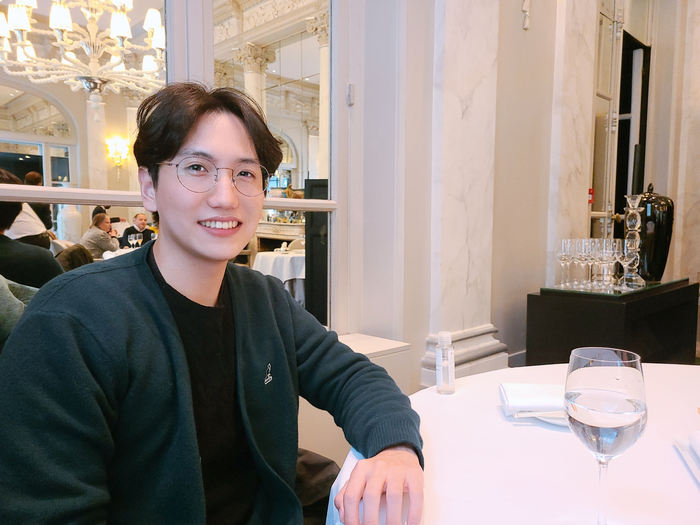

Seungeun Rho
Hello! I'm a second-year Computer Science Ph.D. student at Georgia Tech, advised by Dr. Sehoon Ha. I am interested in reinforcement learning and its applications on robotics.
Hello! I'm a second-year Computer Science Ph.D. student at Georgia Tech, advised by Dr. Sehoon Ha. I am interested in reinforcement learning and its applications on robotics.


Both 1st place winner & research prize winner, The task is about following natural language instructions to build a target structure without seeing what it should look like at the end.
[project]
Football AI RL Competition. Achieved gold medal and ranked in 6th out of 1,138 teams.
[project] [github] [approach]